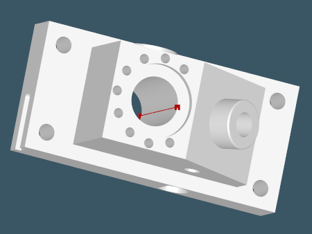
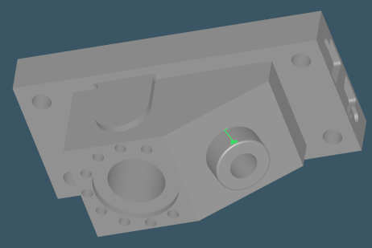

AAG overview
"AAG = Amazing Adjacency Graph" (its grateful users).
Attributed adjacency graph (AAG) is the auxiliary data structure which is often used for feature recognition. The concept of AAG is well described in the paper by [Joshi and Chang, 1988]. Unlike the face adjacency graph (FAG) presented by [Ansaldi et al, 1985], our implementation of the graph permits only single arcs between the nodes [Slyadnev et al, 2020]. In our AAG implementation, an arc expresses a neighborhood relation rather than its actual realization by means of boundary edges. The following figure gives an example of AAG built for a synthetic model.

AAG is a convenient shape descriptor. It serves the following purposes:
- AAG contains information on face neighborhood explicitly. The neighborhood relations are expressed as graph arcs.
- Edge vexity (concave or convex property) is stored as arc attribute (hence the graph is called "attributed"). Edge vexity is a fundamental geometric heuristic, especially useful for feature recognition.
- AAG enables graph formalism for operating with CAD models. E.g., using AAG, it is straightforward to find features as subgraphs by the given search pattern.
- AAG serves as a natural cache for exploration maps: it stores the internal indexation of faces, edges, and vertices. Hence it is not necessary to recompute indexation in algorithms.
- Since a B-Rep model in OpenCascade does not contain any attributes, the question on how to bind supplementary data with geometric entities often arises. AAG gives a convenient way to assign custom attributes with its nodes and arcs. For example, it is possible to store information on the recognized features right in the AAG. Therefore, the feature recognition process may consist in enriching the graph with more and more information which you were able to extract from the dumb model.

Dumping to JSON
Analysis Situs allows dumping the attributed adjacency graph in JSON format for subsequent use in external feature recognizers. Here is the example of the serialized AAG corresponding to a simple box solid:
{
"nodes": {
"1": {
"surface": "plane"
},
"2": {
"surface": "plane"
},
"3": {
"surface": "plane"
},
"4": {
"surface": "plane"
},
"5": {
"surface": "plane"
},
"6": {
"surface": "plane"
}
},
"arcs": [
["1", "3", "convex"],
["1", "4", "convex"],
["1", "5", "convex"],
["1", "6", "convex"],
["2", "3", "convex"],
["2", "4", "convex"],
["2", "5", "convex"],
["2", "6", "convex"],
["3", "5", "convex"],
["3", "6", "convex"],
["4", "5", "convex"],
["4", "6", "convex"]
]
}There are two blocks in the JSON output: the "nodes" and the "arcs". Each node has the corresponding 1-based ID. The IDs of the nodes are referenced in the "arcs" block. Be aware that the attributed adjacency graph is not oriented, so the order of node IDs has no sense in the link specification. If there are any attributes associated with AAG nodes, these attributes are also dumped.
To dump AAG for the active part to a JSON-file, use the following Tcl command:
Q & A
Why is there a dihedral angle attribute on cylindrical faces?
This attribute is induced by the "seam" edges of periodic faces, i.e., the edges corresponding to angles 0 and 2*PI on a cylinder (it also applies to spheres, cones, surfaces of revolution, periodic splines, etc).
Concave angle:
Convex angle:
The dihedral angles of seam edges are available as nodal AAG attributes of the corresponding faces.
How do I know if an edge is an inner one on a face?
This information is not encoded in AAG directly. If you are looking for faces having some inner loops, you may want to try recognize-base-faces Tcl command. If you really need to enumerate the inner edges, consider doing that in C++.
void ComputeInnerEdges(const TopoDS_Face& face,
TopTools_IndexedMapOfShape& edges)
{
TopoDS_Wire outerWire = BRepTools::OuterWire(face);
// Explore wires.
for ( TopExp_Explorer explW(face, TopAbs_WIRE); explW.More(); explW.Next() )
{
const TopoDS_Wire& candWire = TopoDS::Wire( explW.Current() );
//
if ( candWire.IsPartner(outerWire) )
continue;
// Explore edges.
for ( TopExp_Explorer explE(candWire, TopAbs_EDGE); explE.More(); explE.Next() )
{
const TopoDS_Edge& E = TopoDS::Edge( explE.Current() );
// Add to the result.
edges.Add(E);
}
}
}